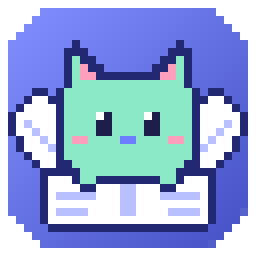
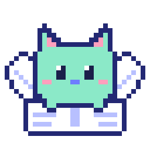
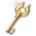
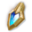

⟳
알아서 기록
던전, 우편, 아이템 사용처럼 숫자가 바뀌는 순간을 알아채서 관리표를 바로 고치고, 게임 위에 이렇게 알려 줘요. 확실하지 않으면 혼자 정하지 않고 먼저 물어봐요.
✓자동 반영각성전 0(+28) → 0(+27)회
✓자동 반영오드 에너지(각인) +4개
66개 보유 중
✓자동 반영작은 오드 에너지(각인) 2개 사용
79 → 77개
✓자동 반영무스펠 완료

데바로그
게임은 네가, 기록은 내가!
데바로그만 켜 두면 아이온2 캐릭터의 숙제 정보가 표에 저절로 채워져
| 항목 | 데바냥 | 데바1 | 데바2 | 데바3 |
|---|---|---|---|---|
| 오드 에너지 | 285 (+5,830) | 60 (+3,250) | 340 (+4,220) | 15 (+9,460) |
| 악몽 | 14회 | 14회 | 7회 | 14회 |
| 각성전 | 0회 (+3회) | 0회 (+5회) | 0회 (+8회) | 0회 (+4회) |
| 루드라 | 완료 | 미완료 | 완료 | 완료 |
| 침식의 정화소 | 완료 | 완료 | 완료 | 미완료 |
| 무스펠 | 완료 | 완료 | 미완료 | 완료 |
| 비탄의 설원 | 미완료 | 완료 | 완료 | 완료 |
| 히든 큐브 열쇠 | 2개 | 0개 | 3개 | 1개 |
| 강화석 | 78.2만 | 11.3만 | 21.1만 | 4.6만 |
| 키나 | 5,893,877 | 4,368,374 | 2,379,231 | 10,000,000 |
던전, 우편, 아이템 사용처럼 숫자가 바뀌는 순간을 알아채서 관리표를 바로 고치고, 게임 위에 이렇게 알려 줘요. 확실하지 않으면 혼자 정하지 않고 먼저 물어봐요.
오드 구매, 시련, 시즌 점수 11,000점 달성, 이벤트 아이템처럼 따로 챙기고 싶은 나만의 관리 항목을 직접 추가해서 캐릭터마다 체크할 수 있어요.
| 데바냥 | 데바1 | 데바2 | |
|---|---|---|---|
| 오드 구매 | ✓ | ✓ | |
| 시련 | ✓ | ||
| 시즌 점수 11,000점 | ✓ | ✓ | ✓ |
| 이벤트 아이템 교환 | ✓ |
게임 화면 구석에 지금 접속한 캐릭터와 슈고 열쇠, 차원 침공 열쇠, 오드가 늘 떠 있어요. 창을 바꾸지 않아도 바로 확인할 수 있어요.

0 (+21) 0
35 (+1995) (+2640)사명, 슈고, 차원 침공처럼 계정 전체가 함께 쓰는 횟수와 계정 전체 오드·키나 합계를 관리표 맨 위 한 줄에 모아요.
캐릭터마다 키나가 언제 얼마나 늘고 줄었는지 저절로 적어 둬요. 오늘·7일·30일 동안 번 키나를 던전 보상, 거래소, 그 외로 나눠서 보여 줘요.
| 캐릭터 | 획득 | 사용 | 순변화 |
|---|---|---|---|
| 데바냥 | +62,300,000 | −40,100,000 | +22,200,000 |
| 데바1 | +38,900,000 | −29,600,000 | +9,300,000 |
| 데바2 | +23,300,000 | −13,500,000 | +9,800,000 |
우리 진영이 점령한 회랑에 들어가면 관리표에 저절로 체크하고 게임 위에도 알려 줘요. 점령전·보스·나흐마 일정도 관리표 맨 위에서 보여 주고, 기록은 수·토요일 점령전 시간에 새로 시작해요. 설정 > 실험실에서 켜면 써 볼 수 있어요.
| 항목 | 데바냥 | 데바1 | 데바2 |
|---|---|---|---|
| 어비스 회랑 ⚙ | ✓ 완료 | ○ 미완료 · 3/4✓ 완료 | ○ 미완료 · 0/4 |
모든 캐릭터를 한 표에서 나란히 비교해요. 계정은 최대 2개까지 등록해 탭으로 오갈 수 있어요.
가방에 쌓아 둔 오드 아이템을 충전량으로 바꿔 더해 보여 줘요. 사용 기간이 정해진 오드가 몇 개인지도 따로 볼 수 있어요.
악몽처럼 꽉 차서 다음 충전이 버려질 횟수를 미리 빨갛게 알려 줘요.